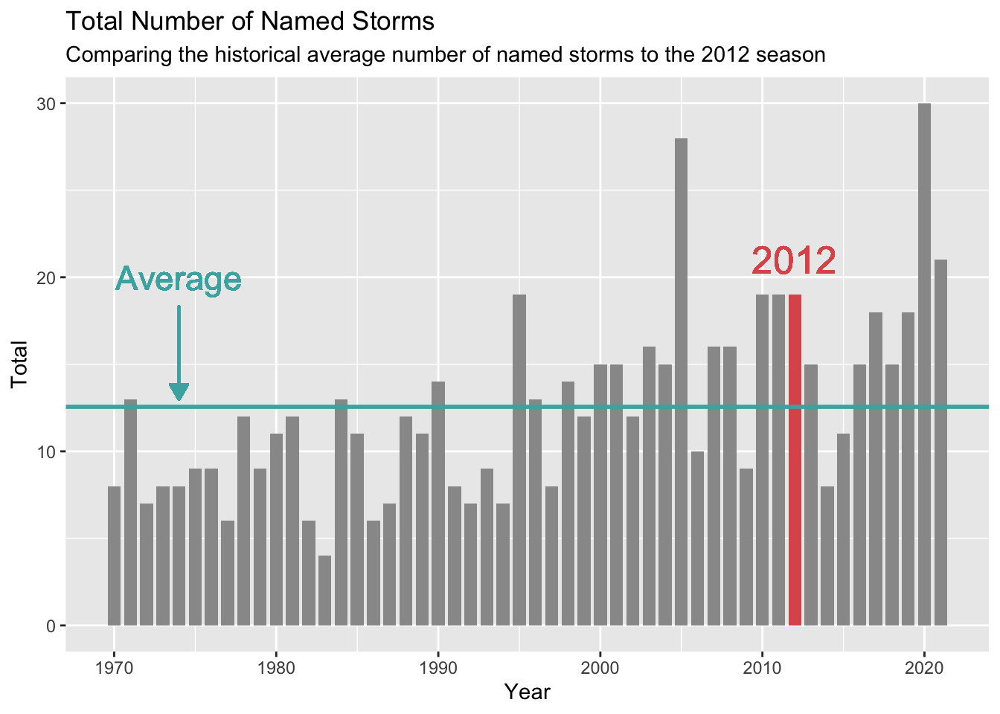
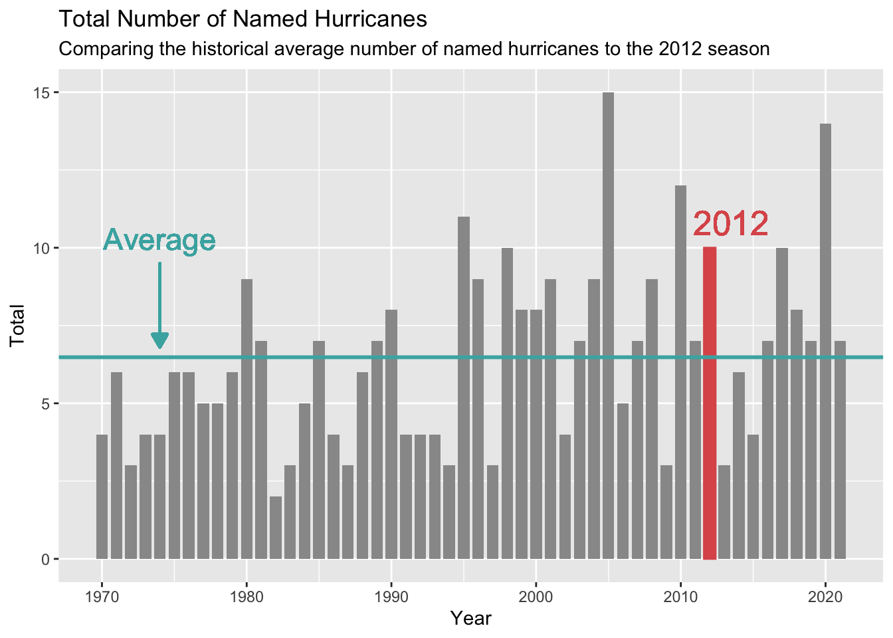
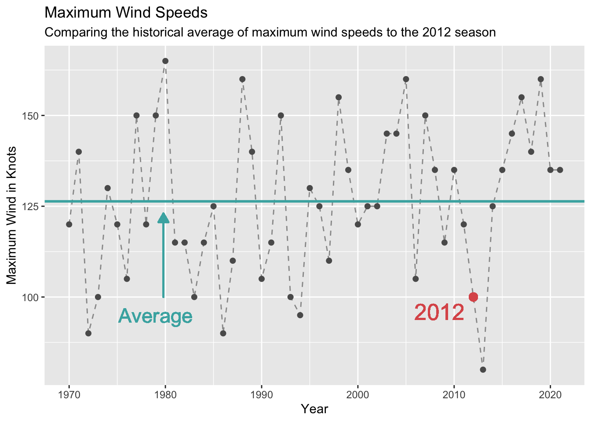
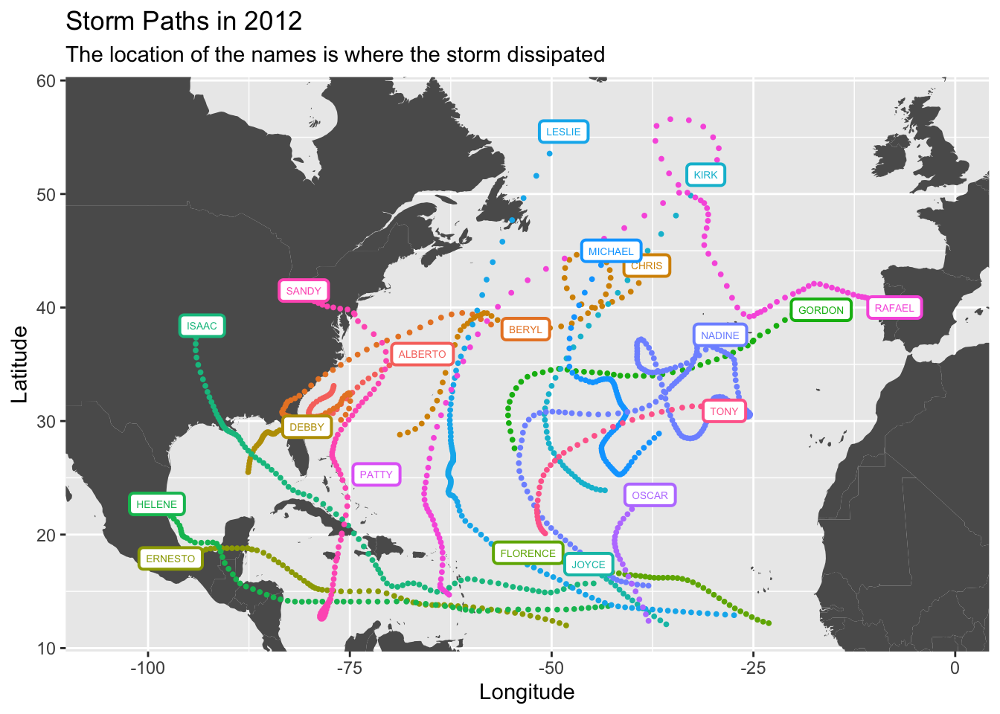
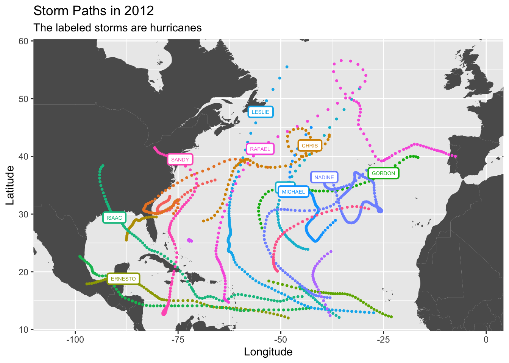

Code
library(tidyverse)
library(lubridate)
library(spData)
library(rmdformats)Let’s perform an analysis on tropical cyclones in the North Atlantic. The data that we’ll be using is from the International Best Track Archive for Climate Stewardship. The CSV file can be found here while the data documentation can be found here.
Tropical cyclones are also known as tropical systems. They generally form near the tropical regions where the ocean is at least 80 degrees Fahrenheit. This warm water evaporates which creates warm moist air that acts as fuel for the storms. When this warm air rises into the atmosphere it begins to cool and large stormy clouds begin to form. As more warm air continues to rise then the winds will spiral and increase in speed.
The wind speed in the tropical cyclones is used to classify each storm. According to the Saffir-Simpson Wind Scale we have the following table
| Tropical Cyclone | Sustained Wind Speed | Type of Hurricane | Named |
|---|---|---|---|
| Tropical Depression | 38 mph or less | Not a hurricane | Unnamed |
| Tropical Storm | 39 - 73 mph | Not a hurricane | Named |
| Category 1 | 74 - 95 mph | Hurricane | Named |
| Category 2 | 96 - 110 mph | Hurricane | Named |
| Category 3 | 111 - 129 mph | Major hurricane | Named |
| Category 4 | 130 - 156 mph | Major hurricane | Named |
| Category 5 | 157 mph or higher | Major hurricane | Named |
It’s also important to note that hurricanes, cyclones, and typhoons are all tropical cyclones but are referred to as different names depending on the location in which they form. Hurricanes form in the North Atlantic, central North Pacific, and eastern North Pacific. Cyclones form in the South Pacific and Indian Ocean. Finally, typhoons form in the Northwest Pacific. More information on hurricanes form can be found at the University Corporation For Atmospheric Research.
To begin working with our dataset we’re going to need the following R packages
library(tidyverse)
library(lubridate)
library(spData)
library(rmdformats)original_DF = read.csv(file = "./data/ibtracs.NA.list.v04r00.csv")head(select(original_DF,1:6)) SID SEASON NUMBER BASIN SUBBASIN NAME
1 Year NA
2 1851175N26270 1851 5 <NA> GM NOT_NAMED
3 1851175N26270 1851 5 <NA> GM NOT_NAMED
4 1851175N26270 1851 5 <NA> GM NOT_NAMED
5 1851175N26270 1851 5 <NA> GM NOT_NAMED
6 1851175N26270 1851 5 <NA> GM NOT_NAMEDWe can see that the first row is unnecessary. We can also see that in the column BASIN the entry NA is being returned as a missing value in R, but it actually represents the North Atlantic region. Therefore we should fix this.
Now we can clean our data by changing the column names, specifying the data types, and by specifying how missing values are encoded
# Vector of names for first 16 columns
col_names = c("SID",
"SEASON",
"NUMBER",
"BASIN",
"SUBBASIN",
"NAME",
"ISO_TIME",
"NATURE",
"LAT",
"LON",
"WMO_WIND",
"WMO_PRES",
"WMO_AGENCY",
"TRACK_TYPE",
"DIST2LAND",
"LANDFALL"
)
# Vector of data-types for first 16 columns
col_types = c("character",
"integer",
"integer",
"character",
"character",
"character",
"character",
"character",
"numeric",
"numeric",
"integer",
"integer",
"character",
"character",
"integer",
"integer"
)
DF = read.csv(file = "./data/ibtracs.NA.list.v04r00.csv",
stringsAsFactors = FALSE,
skip = 1,
na.strings = ""
)
# Renaming columns using col_names
colnames(DF) = col_names
# Update df to only the first 16 columns
DF = select(DF, 1:16)In our analysis it will also be useful work with months so let’s add a month column to our dataset
DF$ISO_TIME = as.POSIXct(DF$ISO_TIME)
DF$MONTH = lubridate::month(DF$ISO_TIME)We’ll also focus on the time period beginning from 1970 instead of 1851 because in the 1960’s we began to track these storms with satellites.
DF = filter(DF, SEASON >= 1970)Now let’s take a look at our data
head(select(DF,1:6)) SID SEASON NUMBER BASIN SUBBASIN NAME
1 1970138N12281 1970 43 NA CS ALMA
2 1970138N12281 1970 43 NA CS ALMA
3 1970138N12281 1970 43 NA CS ALMA
4 1970138N12281 1970 43 NA CS ALMA
5 1970138N12281 1970 43 NA CS ALMA
6 1970138N12281 1970 43 NA CS ALMAstr(DF, vec.len = 1)'data.frame': 47100 obs. of 17 variables:
$ SID : chr "1970138N12281" ...
$ SEASON : int 1970 1970 ...
$ NUMBER : int 43 43 ...
$ BASIN : chr "NA" ...
$ SUBBASIN : chr "CS" ...
$ NAME : chr "ALMA" ...
$ ISO_TIME : POSIXct, format: "1970-05-17 18:00:00" ...
$ NATURE : chr "TS" ...
$ LAT : num 11.5 ...
$ LON : num -79 ...
$ WMO_WIND : int 25 NA ...
$ WMO_PRES : int NA NA ...
$ WMO_AGENCY: chr "hurdat_atl" ...
$ TRACK_TYPE: chr "main" ...
$ DIST2LAND : int 224 235 ...
$ LANDFALL : int 224 235 ...
$ MONTH : num 5 5 ...Now we can begin working with our dataset.
We’ll be focusing on the 2012 Atlantic hurricane season. Let’s create a new that includes all of the depressions that occurred in 2012. Therefore we have the following
depressions_2012 = filter(DF, SEASON == 2012)A tropical depression is such that are those that have winds of 38 mph or less. Therefore we can find the total with the following code
# 38 mph = 33.02 knots
depressions_2012 %>%
filter(WMO_WIND <= 33.02) %>%
group_by(NAME) %>%
summarise(SID = first(SID),
BASIN = first(BASIN))# A tibble: 19 × 3
NAME SID BASIN
<chr> <chr> <chr>
1 ALBERTO 2012140N33283 NA
2 BERYL 2012147N30284 NA
3 CHRIS 2012169N29291 NA
4 DEBBY 2012176N26272 NA
5 ERNESTO 2012215N12313 NA
6 FLORENCE 2012216N12337 NA
7 GORDON 2012229N28305 NA
8 HELENE 2012223N14317 NA
9 ISAAC 2012234N16315 NA
10 JOYCE 2012235N11328 NA
11 KIRK 2012242N24317 NA
12 LESLIE 2012242N13333 NA
13 MICHAEL 2012246N29323 NA
14 NADINE 2012255N16322 NA
15 OSCAR 2012277N12322 NA
16 PATTY 2012285N26288 NA
17 RAFAEL 2012287N15297 NA
18 SANDY 2012296N14283 NA
19 TONY 2012296N20309 NA Therefore we have that the total number of depressions was 19 in 2012.
We know that the number of named storms are those such that have winds of at least 39 mph. Therefore we can find the total with the following code
# 39 mph = 33.89 knots
depressions_2012 %>%
group_by(NAME) %>%
filter(WMO_WIND > 33.89) %>%
summarise(SID = first(SID),
BASIN = first(BASIN))# A tibble: 19 × 3
NAME SID BASIN
<chr> <chr> <chr>
1 ALBERTO 2012140N33283 NA
2 BERYL 2012147N30284 NA
3 CHRIS 2012169N29291 NA
4 DEBBY 2012176N26272 NA
5 ERNESTO 2012215N12313 NA
6 FLORENCE 2012216N12337 NA
7 GORDON 2012229N28305 NA
8 HELENE 2012223N14317 NA
9 ISAAC 2012234N16315 NA
10 JOYCE 2012235N11328 NA
11 KIRK 2012242N24317 NA
12 LESLIE 2012242N13333 NA
13 MICHAEL 2012246N29323 NA
14 NADINE 2012255N16322 NA
15 OSCAR 2012277N12322 NA
16 PATTY 2012285N26288 NA
17 RAFAEL 2012287N15297 NA
18 SANDY 2012296N14283 NA
19 TONY 2012296N20309 NA Therefore we have that the total number of named storms was 19 in 2012.
We know that a named storm becomes a hurricane once its winds reach at least 74 mph. Therefore we can find the total with the following code
# 74 mph = 64.30 knots
depressions_2012 %>%
filter(WMO_WIND >= 64.30) %>%
group_by(NAME) %>%
summarise(SID = first(SID),
BASIN = first(BASIN))# A tibble: 10 × 3
NAME SID BASIN
<chr> <chr> <chr>
1 CHRIS 2012169N29291 NA
2 ERNESTO 2012215N12313 NA
3 GORDON 2012229N28305 NA
4 ISAAC 2012234N16315 NA
5 KIRK 2012242N24317 NA
6 LESLIE 2012242N13333 NA
7 MICHAEL 2012246N29323 NA
8 NADINE 2012255N16322 NA
9 RAFAEL 2012287N15297 NA
10 SANDY 2012296N14283 NA Therefore we have that the number of hurricanes was 10 in 2012.
We know that a storm becomes a major hurricane when its wind speeds reach 111 mph. We can find this total with the following code
# 111 mph = 96.46 knots
depressions_2012 %>%
filter(WMO_WIND >= 96.46) %>%
group_by(NAME) %>%
summarise(SID = first(SID),
BASIN = first(BASIN))# A tibble: 2 × 3
NAME SID BASIN
<chr> <chr> <chr>
1 MICHAEL 2012246N29323 NA
2 SANDY 2012296N14283 NA Therefore we can conclude that there were two major hurricanes in 2012 and there names were Michael and Sandy.
We can find this with the following code
depressions_2012 %>%
select(NAME, ISO_TIME) %>%
arrange(ISO_TIME) %>%
slice(1) NAME ISO_TIME
1 ALBERTO 2012-05-19Therefore the date of the first system was 2012-05-19 and its name was Alberto.
We can find this with the following code
depressions_2012 %>%
select(NAME, ISO_TIME) %>%
arrange(desc(ISO_TIME)) %>%
slice(1) NAME ISO_TIME
1 SANDY 2012-10-31 12:00:00Therefore the date of the last system dissipated was 2012-10-31 and its name was Sandy.
We can find this with the following
depressions_2012 %>%
filter(WMO_WIND == max(depressions_2012$WMO_WIND, na.rm = TRUE)) %>%
group_by(NAME) %>%
summarise()# A tibble: 2 × 1
NAME
<chr>
1 MICHAEL
2 SANDY Therefore we can conclude that there were two storms that were equally as strong. These storms were Michael and Sandy.
We can find this with the following
depressions_2012 %>%
filter(WMO_WIND == max(WMO_WIND, na.rm = TRUE)) %>%
group_by(NAME) %>%
summarise(Max_Wind = max(WMO_WIND, na.rm = TRUE))# A tibble: 2 × 2
NAME Max_Wind
<chr> <int>
1 MICHAEL 100
2 SANDY 100The maximum wind speed for both Michael and Sandy were 100 knots or about 115 mph.
We can find this with the following code
depressions_2012 %>%
filter(NAME == "MICHAEL" | NAME == "SANDY") %>%
group_by(NAME) %>%
summarise(min_pres = min(WMO_PRES, na.rm = TRUE),
max_pres = max(WMO_PRES, na.rm = TRUE)
)# A tibble: 2 × 3
NAME min_pres max_pres
<chr> <int> <int>
1 MICHAEL 964 1015
2 SANDY 940 1006Therefore the lowest pressure for Michael was 964, and the lowest pressure for Sandy was 940.
First, let’s create a data frame named_storms which contains all of the named storms between 1970 and 2021. Therefore we have
# 39 mph = 33.89 knots
named_storms = DF %>%
group_by(NAME) %>%
select(NAME, SEASON, WMO_WIND) %>%
filter(WMO_WIND >= 33.89) %>%
count(SEASON)We can display the first 5 rows of this data frame
head(named_storms)# A tibble: 6 × 3
# Groups: NAME [2]
NAME SEASON n
<chr> <int> <int>
1 AGNES 1972 21
2 ALBERTO 1982 7
3 ALBERTO 1988 4
4 ALBERTO 1994 9
5 ALBERTO 2000 82
6 ALBERTO 2006 28Now using named_storms we can create a new data frame num_mamed_storm which contains all of the named storms that happened per year
num_named_storms = named_storms %>%
group_by(SEASON) %>%
count(SEASON)We can display the first 5 rows of num_named_storms
head(num_named_storms)# A tibble: 6 × 2
# Groups: SEASON [6]
SEASON n
<int> <int>
1 1970 8
2 1971 13
3 1972 7
4 1973 8
5 1974 8
6 1975 9Now we can compute the average number of named storms
mean(num_named_storms$n)[1] 12.55769We can extract the total number of named storms in 2012 with the following
filter(num_named_storms, SEASON == 2012)# A tibble: 1 × 2
# Groups: SEASON [1]
SEASON n
<int> <int>
1 2012 19Therefore the average number of named storms between 1970 and 2021 was about 12 per year. In 2012 there were 19 named storms, therefore 2012 was an above-average season for named storms.
We can see this in the following graph
ggplot(data = num_named_storms, aes(x = SEASON, y = n)) +
geom_col(width = .8,
fill = my_grey1) +
labs(title = "Total Number of Named Storms",
subtitle = "Comparing the historical average number of named storms to the 2012 season",
x = "Year",
y = "Total") +
geom_col(data = filter(num_named_storms, SEASON == 2012),
width = .8,
fill = my_red) +
geom_text(x = 2012,
y = 21,
label = "2012",
color = my_red,
size = 6.8) +
geom_hline(yintercept = mean(num_named_storms$n),
color = my_blue,
size = 1) +
geom_text(x = 1974,
y = 20,
size = 6,
color = my_blue,
aes(label = "Average")) +
geom_segment(x = 1974, y = 18.3,
xend = 1974 , yend = 13,
lineend = "round",
linejoin = "round",
size = .7,
color = my_blue,
arrow = arrow(length = unit(0.3, "cm"),
type = "closed")
)Warning: Using `size` aesthetic for lines was deprecated in ggplot2 3.4.0.
ℹ Please use `linewidth` instead.
First, let’s create a data frame named_hurricanes which contains all of the named hurricanes between 1970 and 2021. Therefore we have
# 74 mph = 64.30 knots
named_hurricanes = DF %>%
group_by(NAME) %>%
select(NAME, SEASON, WMO_WIND) %>%
filter(WMO_WIND > 64.30) %>%
count(SEASON)Let’s display the first 5 rows of named_hurricanes
head(named_hurricanes)# A tibble: 6 × 3
# Groups: NAME [3]
NAME SEASON n
<chr> <int> <int>
1 AGNES 1972 6
2 ALBERTO 1982 2
3 ALBERTO 2000 47
4 ALEX 2004 13
5 ALEX 2010 8
6 ALEX 2016 9Now using named_hurricanes we can create a new data frame num_named_hurricanes which contains all of the named hurricanes that happened per year
num_named_hurricanes = named_hurricanes %>%
group_by(SEASON) %>%
count(SEASON)Let’s display the first 5 rows of num_named_hurricanes
head(num_named_hurricanes)# A tibble: 6 × 2
# Groups: SEASON [6]
SEASON n
<int> <int>
1 1970 4
2 1971 6
3 1972 3
4 1973 4
5 1974 4
6 1975 6Now we can compute the average number of named hurricanes
mean(num_named_hurricanes$n)[1] 6.480769We can extract the total number of named hurricanes in 2012 with the following code
filter(num_named_hurricanes, SEASON == 2012)# A tibble: 1 × 2
# Groups: SEASON [1]
SEASON n
<int> <int>
1 2012 10Therefore the average number of named hurricanes between 1970 and 2021 was about 6 per year. In 2012 there was 10 named hurricanes. Therefore 2012 was an above-average year.
We can see this in the following graph
ggplot(data = num_named_hurricanes, aes(x = SEASON, y = n)) +
geom_col(width = .8,
fill = my_grey1) +
labs(title = "Total Number of Named Hurricanes",
subtitle = "Comparing the historical average number of named hurricanes to the 2012 season",
x = "Year",
y = "Total") +
geom_col(data = filter(num_named_hurricanes, SEASON == 2012),
color = my_red,
fill = my_red,
width = .8) +
geom_text(x = 2013.5,
y = 10.8,
label = "2012",
color = my_red,
size = 6.8) +
geom_hline(yintercept = mean(num_named_hurricanes$n),
col = my_blue,
size = 1) +
geom_text(x = 1974,
y = 10.3,
size = 6,
col = my_blue,
show.legend = TRUE,
aes(label = "Average")) +
geom_segment(x = 1974, y = 9.5,
xend = 1974, yend = 6.8,
lineend = "round",
linejoin = "round",
size = .7,
color = my_blue,
arrow = arrow(length = unit(0.3, "cm"),
type = "closed"),
)
First, let’s create a data frame max_winds which contains the maximum winds per year. Therefore we have
# For the 2021 season the wind speeds are not available
max_winds = DF %>%
filter(SEASON != 2022) %>%
select(SEASON, WMO_WIND) %>%
group_by(SEASON) %>%
summarise(max_wmo_wind = max(WMO_WIND, na.rm = TRUE))Let’s display the first 5 rows of max_winds
head(max_winds)# A tibble: 6 × 2
SEASON max_wmo_wind
<int> <int>
1 1970 120
2 1971 140
3 1972 90
4 1973 100
5 1974 130
6 1975 120Now we can compute the average of max winds between 1970 and 2020
mean(max_winds$max_wmo_wind)[1] 126.3462We can extract the maximum wind speeds in 2012 with the following code
filter(max_winds, SEASON == 2012)# A tibble: 1 × 2
SEASON max_wmo_wind
<int> <int>
1 2012 100Therefore the average of maximum winds between 1970 and 2020 was about 126 knots or about 145 mph. The maximum wind speed in 2012 was about 100 knots or about 115 mph. Therefore 2012 was a below-average season with respect to maximum wind speeds.
We can show this with the following graph
ggplot(data = max_winds, aes(x = SEASON, y = max_wmo_wind)) +
labs(title = "Maximum Wind Speeds",
subtitle = "Comparing the historical average of maximum wind speeds to the 2012 season",
x = "Year",
y = "Maximum Wind in Knots") +
geom_line(linetype = "dashed",
color = my_grey1) +
geom_point(size = 1.8,
color = my_grey2) +
geom_point(x = 2012,
y = 100,
size = 3,
color = my_red) +
geom_text(x = 2008.5,
y = 96,
color = my_red,
size = 6.8,
label = "2012") +
geom_hline(yintercept = mean(max_winds$max_wmo_wind),
size = 1,
color = my_blue
) +
geom_text(x = 1979,
y = 95,
size = 6,
color = my_blue,
label = "Average") +
geom_segment(x = 1979.8, y = 100,
xend = 1979.8, yend = 123,
lineend = "round",
linejoin = "round",
size = .7,
color = my_blue,
arrow = arrow(length = unit(.3, "cm"),
type = "closed"))
Let’s now graph map of the storm paths for 2012. First, we’ll need the following world dataset.
world_df = map_data("world")Let’s now create an additional data frame named_depressions_2012 which contains all of the individual storms and their respective time of dissipation, latitude, and longitude columns.
named_depressions_2012 = depressions_2012 %>%
select(NAME, ISO_TIME, LAT, LON) %>%
group_by(NAME) %>%
summarise(date = last(ISO_TIME),
lat = last(LAT),
lon = last(LON))Now we can get a graph of our map
ggplot(data = world_df) +
labs(title = "Storm Paths in 2012",
subtitle = "The location of the names is where the storm dissipated",
x = "Longitude",
y = "Latitude") +
geom_map(aes(x = long, y = lat, map_id = region),
map = world_df,
size = 1,
fill = my_grey2) +
xlim(-105,-1) + ylim(12,58) +
geom_point(data = depressions_2012,
aes(x = LON, y = LAT, color = NAME),
size = .7,
show.legend = FALSE) +
geom_label(data = named_depressions_2012,
aes(x = lon,
y = lat,
label = NAME,
color = NAME),
show.legend = FALSE,
size = 1.8,
label.size = .7)
Similarly, let’s now create an additional data frame named_hurricanes_2012 which contains all of the individual hurricanes and their respective time of dissipation, latitude, and longitude columns. Therefore
# 74 mph = 64.30 knots
named_hurricanes_2012 = filter(depressions_2012, WMO_WIND >= 64.30) %>%
select(NAME, ISO_TIME, LAT, LON) %>%
group_by(NAME) %>%
summarise(date = last(ISO_TIME),
lat = last(LAT),
lon = last(LON))ggplot(data = world_df) +
labs(title = "Storm Paths in 2012",
subtitle = "The labeled storms are hurricanes",
x = "Longitude",
y = "Latitude") +
geom_map(aes(x = long, y = lat, map_id = region),
map = world_df,
size = 1,
fill = my_grey2) +
xlim(-105,-1) + ylim(12,58) +
geom_point(data = depressions_2012,
aes(x = LON, y = LAT, color = NAME),
size = .7,
show.legend = FALSE) +
geom_label(data = named_hurricanes_2012,
aes(x = lon,
y = lat,
label = NAME,
color = NAME),
show.legend = FALSE,
size = 1.8,
label.size = .7)
From our map we can see that 2 hurricanes hit the United States and they were Isaac and Sandy.